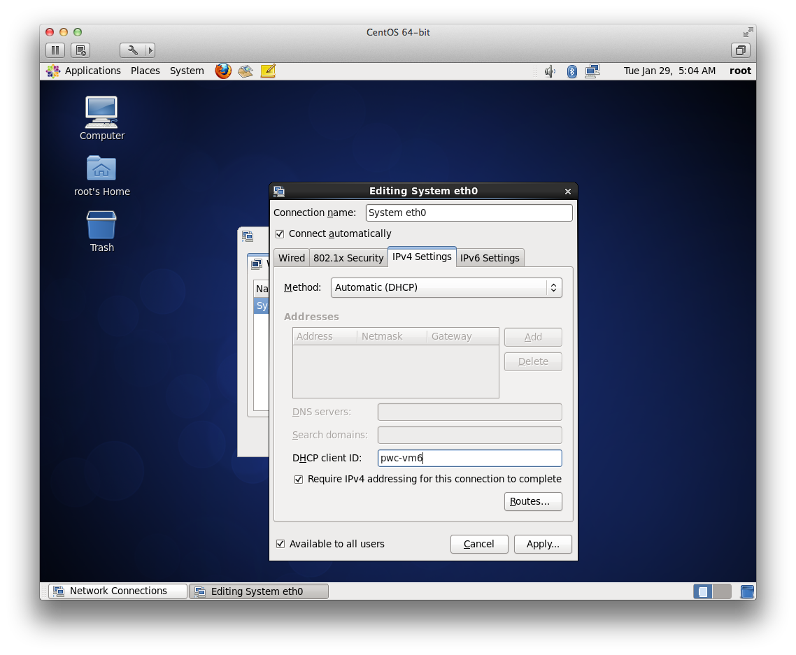
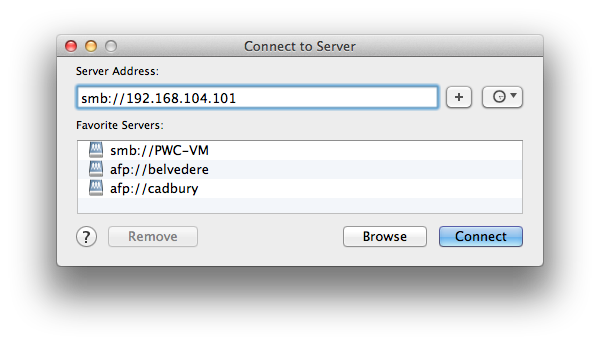

Virtual Machines
For Web Development
Why?
- Create a dev environment that closely matches staging/production servers
- Same OS
- Same software versions
- Same Extensions
- Same paths
- Keeps existing dev environment clean
VM Choices
- VM Ware $50
- Parallels $80
- VirtualBox Free
OS Choices
- Linux
- Windows
- Unix
- Mac
Creating a VM
VMWare
- R/GA Supported
- Fusion on the Mac
- Player on the PC
What is your server running?
Unix
%uname -a
FreeBSD tyllur.pair.com 7.3-RELEASE-p2 FreeBSD 7.3-RELEASE-p2 #0: Fri Nov 23 08:39:01 EST 2012 erik5@yodh.pair.com:/usr/obj/usr/src/sys/73PAIRe i386
Linux
%uname -a
Linux pwc-vm 2.6.18-308.20.1.el5 #1 SMP Tue Nov 13 10:15:12 EST 2012 x86_64 x86_64 x86_64 GNU/Linux
%cat /etc/*-release
CentOS release 5.8 (Final)
%lsb_release -a
LSB Version: :core-4.0-amd64:core-4.0-ia32:core-4.0-noarch:graphics-4.0-amd64:graphics-4.0-ia32:graphics-4.0-noarch:printing-4.0-amd64:printing-4.0-ia32:printing-4.0-noarch
Distributor ID: CentOS
Description: CentOS release 5.8 (Final)
Release: 5.8
Codename: Final
Windows
Windows
Mac
%uname -a
Darwin LT-MBP-NYC-354.local 12.2.0 Darwin Kernel Version 12.2.0: Sat Aug 25 00:48:52 PDT 2012; root:xnu-2050.18.24~1/RELEASE_X86_64 x86_64 i386 MacBookPro8,2 Darwin
%sw_vers -productVersion
10.8.2
%system_profiler SPSoftwareDataType
Software:
System Software Overview:
System Version: OS X 10.8.2 (12C60)
Kernel Version: Darwin 12.2.0
Boot Volume: Macintosh HD
Boot Mode: Normal
Computer Name: LT-MBP-NYC-354
User Name: William Kolean (william)
Secure Virtual Memory: Enabled
Time since boot: 1:32
Download ISO
Linux/Unix
Windows
- Microsoft Action Pack subscription $329
- TechNet Subscription $199
- mydigitallife.info free
Mac
App Store installer
Creating a new VM
Choose the ISO
Creating a new VM
Easy Install
Creating a new VM
Wait for install to finish
Creating a new VM
Success!
Snapshots
Protection in case things go wrong
Snapshots
Snapshots
Snapshots
VM Networking Setup
Log in as root
Get MAC address
Open Terminal
ifconfig
Hostname
Hostname
Hostname
Firewall
Firewall

Firewall
Samba
%yum install samba
Loaded plugins: fastestmirror, refresh-packagekit, security
Loading mirror speeds from cached hostfile
* base: centos.vipernetworksystems.com
* extras: mirrors.advancedhosters.com
* updates: mirror.cogentco.com
Setting up Install Process
Resolving Dependencies
--> Running transaction check
---> Package samba.x86_64 0:3.5.10-125.el6 will be installed
--> Processing Dependency: samba-common = 3.5.10-125.el6 for package: samba-3.5.10-125.el6.x86_64
--> Running transaction check
---> Package samba-common.x86_64 0:3.5.10-125.el6 will be installed
--> Finished Dependency Resolution
Dependencies Resolved
=========================================================================================================================================================
Package Arch Version Repository Size
=========================================================================================================================================================
Installing:
samba x86_64 3.5.10-125.el6 base 5.0 M
Installing for dependencies:
samba-common x86_64 3.5.10-125.el6 base 13 M
Transaction Summary
=========================================================================================================================================================
Install 2 Package(s)
Total download size: 18 M
Installed size: 64 M
Is this ok [y/N]: y
Downloading Packages:
(1/2): samba-3.5.10-125.el6.x86_64.rpm | 5.0 MB 00:06
(2/2): samba-common-3.5.10-125.el6.x86_64.rpm | 13 MB 00:22
---------------------------------------------------------------------------------------------------------------------------------------------------------
Total 643 kB/s | 18 MB 00:29
warning: rpmts_HdrFromFdno: Header V3 RSA/SHA1 Signature, key ID c105b9de: NOKEY
Retrieving key from file:///etc/pki/rpm-gpg/RPM-GPG-KEY-CentOS-6
Importing GPG key 0xC105B9DE:
Userid : CentOS-6 Key (CentOS 6 Official Signing Key)
Package: centos-release-6-3.el6.centos.9.x86_64 (@anaconda-CentOS-201207061011.x86_64/6.3)
From : /etc/pki/rpm-gpg/RPM-GPG-KEY-CentOS-6
Is this ok [y/N]: y
Running rpm_check_debug
Running Transaction Test
Transaction Test Succeeded
Running Transaction
Installing : samba-common-3.5.10-125.el6.x86_64 1/2
Installing : samba-3.5.10-125.el6.x86_64 2/2
Verifying : samba-3.5.10-125.el6.x86_64 1/2
Verifying : samba-common-3.5.10-125.el6.x86_64 2/2
Installed:
samba.x86_64 0:3.5.10-125.el6
Dependency Installed:
samba-common.x86_64 0:3.5.10-125.el6
Complete!
Samba
%vi /etc/samba/smb.conf
# ----------------------- Standalone Server Options ------------------------
security = share
# --------------------------- Filesystem Options ---------------------------
guest ok = yes
guest account = root
[PwC6-VM]
path = /var/www/html
writeable = yes
guest ok = yes
public = yes
create mask = 0644
%/etc/rc.d/init.d/smb start
%/etc/rc.d/init.d/nmb start
%chkconfig smb on
%chkconfig nmb on
VMWare Networking Setup
Networking Types
- Host Only = No access to network
- Bridged = Another computer on the network
- NAT = Shares host computer's network
Static IP
- Shutdown VM
- Shutdown VMWare
-
Edit dhcp.conf
- /Library/Preferences/VMWare Fusion/vmnet8/dhcpd.conf
- C:\ProgramData\VMware\vmnetdhcp.conf
dhcp.conf
subnet 192.168.104.0 netmask 255.255.255.0 {
range 192.168.104.128 192.168.104.254;
option broadcast-address 192.168.104.255;
option domain-name-servers 192.168.104.2;
option domain-name localdomain;
default-lease-time 1800; # default is 30 minutes
max-lease-time 7200; # default is 2 hours
option netbios-name-servers 192.168.104.2;
option routers 192.168.104.2;
}
host vmnet8 {
hardware ethernet 00:50:56:C0:00:08;
fixed-address 192.168.104.1;
option domain-name-servers 0.0.0.0;
option domain-name "";
option routers 0.0.0.0;
}
####### VMNET DHCP Configuration. End of "DO NOT MODIFY SECTION" #######
dhcp.conf
host pwc-vm6 {
hardware ethernet 00:0C:29:7C:9A:2F;
fixed-address 192.168.104.101;
}
Restart VM
Create domain name
- /etc/hosts
- /etc/hosts.ac
- c:\windows\system32\drivers\etc\hosts
sudo vi /etc/hosts
192.168.104.101 drupal.pwc6.dev
Connect using Terminal
Connect using web browser
http://192.168.104.101/
Connect using Samba
Install Software
%yum list installed | grep php
php.x86_64 5.3.3-14.el6_3 @updates
php-cli.x86_64 5.3.3-14.el6_3 @updates
php-common.x86_64 5.3.3-14.el6_3 @updates
php-devel.x86_64 5.3.3-14.el6_3 @updates
php-gd.x86_64 5.3.3-14.el6_3 @updates
%yum list | grep php
ups-php.x86_64 1:1.4.2-48.el6_3.3 updates
graphviz-php.x86_64 2.26.0-7.el6 base
php.x86_64 5.3.3-14.el6_3 updates
php-bcmath.x86_64 5.3.3-14.el6_3 updates
php-cli.x86_64 5.3.3-14.el6_3 updates
php-common.x86_64 5.3.3-14.el6_3 updates
php-dba.x86_64 5.3.3-14.el6_3 updates
php-devel.x86_64 5.3.3-14.el6_3 updates
php-embedded.x86_64 5.3.3-14.el6_3 updates
php-enchant.x86_64 5.3.3-14.el6_3 updates
php-gd.x86_64 5.3.3-14.el6_3 updates
php-imap.x86_64 5.3.3-14.el6_3 updates
php-intl.x86_64 5.3.3-14.el6_3 updates
php-ldap.x86_64 5.3.3-14.el6_3 updates
php-mbstring.x86_64 5.3.3-14.el6_3 updates
php-mysql.x86_64 5.3.3-14.el6_3 updates
php-odbc.x86_64 5.3.3-14.el6_3 updates
php-pdo.x86_64 5.3.3-14.el6_3 updates
php-pear.noarch 1:1.9.4-4.el6 base
php-pecl-apc.x86_64 3.1.9-2.el6 base
php-pecl-apc-devel.x86_64 3.1.9-2.el6 base
php-pecl-memcache.x86_64 3.0.5-4.el6 base
php-pgsql.x86_64 5.3.3-14.el6_3 updates
php-process.x86_64 5.3.3-14.el6_3 updates
php-pspell.x86_64 5.3.3-14.el6_3 updates
php-recode.x86_64 5.3.3-14.el6_3 updates
php-snmp.x86_64 5.3.3-14.el6_3 updates
php-soap.x86_64 5.3.3-14.el6_3 updates
php-tidy.x86_64 5.3.3-14.el6_3 updates
php-xml.x86_64 5.3.3-14.el6_3 updates
php-xmlrpc.x86_64 5.3.3-14.el6_3 updates
php-zts.x86_64 5.3.3-14.el6_3 updates
rrdtool-php.x86_64 1.3.8-6.el6 base
uuid-php.x86_64 1.6.1-10.el6 base
%yum install php php-common php-devel php-gd
Complete!
[root@localhost ~]# yum list installed | grep php
php.x86_64 5.3.3-14.el6_3 @updates
php-cli.x86_64 5.3.3-14.el6_3 @updates
php-common.x86_64 5.3.3-14.el6_3 @updates
php-devel.x86_64 5.3.3-14.el6_3 @updates
php-gd.x86_64 5.3.3-14.el6_3 @updates
Apache Virtual Server
- /etc/httpd/conf.d
- /etc/apache2/extra
Create Virtual Server
%cd /etc/httpd/conf.d
%vi pwc.conf
<VirtualHost *:80>
ServerName drupal.pwc6.dev
DocumentRoot /var/www/html/PwC/drupal
<Directory "/var/www/html/PwC/drupal">
Order allow,deny
Allow from all
AllowOverride All
</Directory>
</VirtualHost>
%apachectl restart
Domain Name should be working
http://drupal.pwc6.dev/

Tips and Tricks
Start VM automatically

Alias Samba Share
Terminal aliases
%vi ~/.bashrc
alias cdwww='cd /var/www/html'
alias cdpwc='cd /var/www/html/PwC'
alias cddrupal='cd /var/www/html/PwC/drupal'
alias cdbuild='cd /var/www/html/PwC/build'
VM Restart
If response time becomes really slow, restart the VM
Disadvantages
KeyServer
VPN
Cannot connect to VM when connected to VPN
Apple Double Files
CPU usage
Helpful Terminal Programs
- ssh
- vi
- chown
- scp
- tar
- rsync